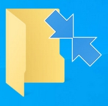
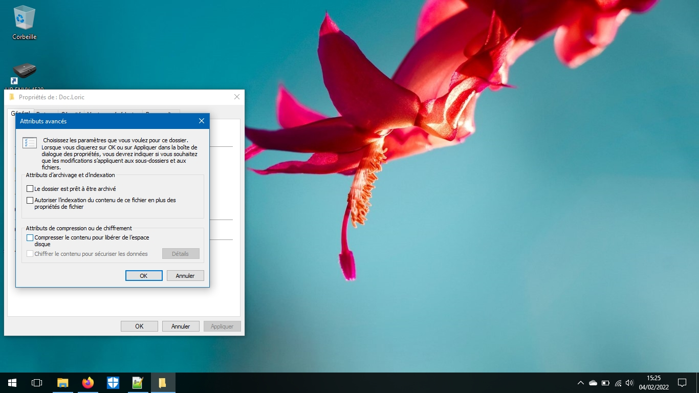
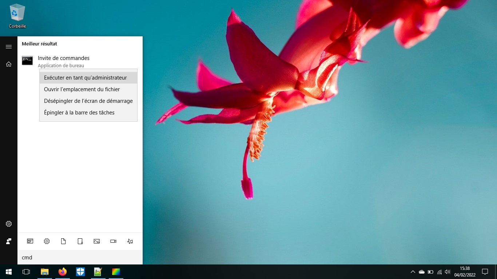
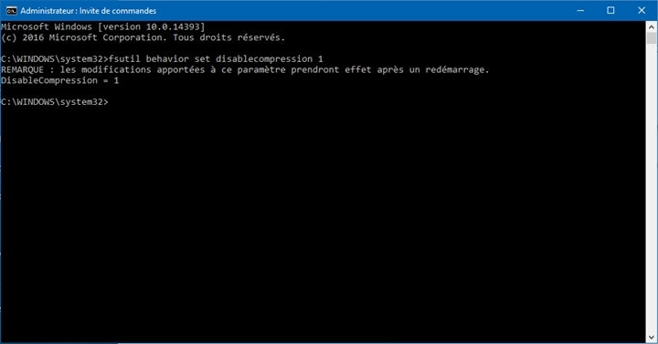

Qu'est-ce qu'elles signifient et comment les enlever ?
Ces flèches bleues signifie que des fichiers ou dossiers ont été compressés (sur les versions Windows 8.1 et inférieur, un fichier ou dossier compressé aurait un nom en bleu)
Une solution est possible ? Oui, et pour commencer, si votre disque dur a de la place, pour chaque dossiers à la racine du disque dur, faites clic-droit, puis Propriétés et cliquez sur Avancé
Vous obtenez ceci :
Décochez Compresser le contenu pour libérer de l'espace disque, puis valider en appuyant sur OK, puis Appliquer, et à tous les dossiers et sous-dossiers.
L'étape peut prendre énormément de temps et d'espace disque, c'est normal.
Ensuite, pour éviter la réapparition de ces "flèches bleues", allez dans le menu Démarrer et tapez (pas forcément dans la barre de recherche si il n'y en a pas) cmd. Faites clic-droit sur Invite de commande, puis Exécuter en tant qu'Administrateur (un mot de passe ou une confirmation peut être demandé).
Dans l'invite de commande, tapez : fsutil behavior set disablecompression 1
Redémarrer votre PC et vous avez réussi à vous débarrasser une bonne fois pour toute les flèches bleues !